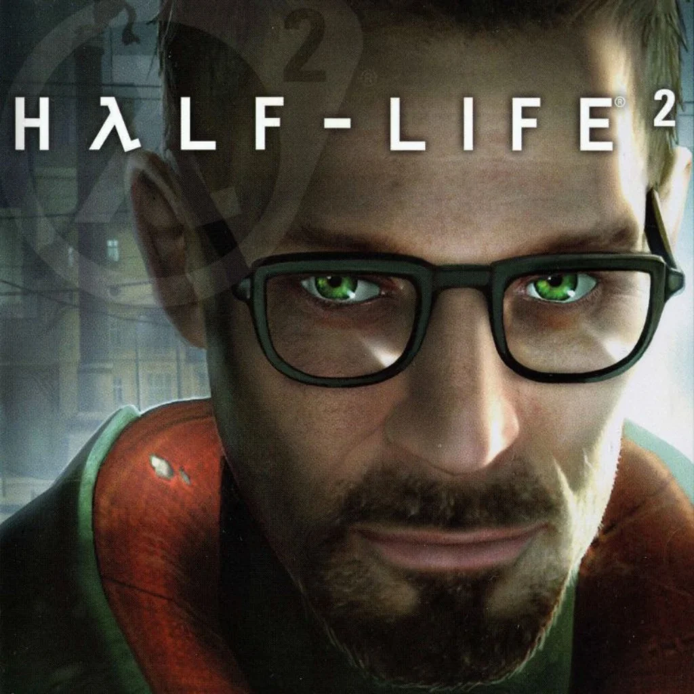

Half-Life 2 — продовження легендарного шутера, що вивело серію на новий рівень. Події розгортаються через кілька років після першої частини. Головний герой, Гордон Фрімен, прокидається у Місті 17 — тоталітарному місті під владою інопланетної імперії Альянс.
Разом з повстанцями, зокрема Алікс Венс та її батьком Ілаєм, Гордон бореться за звільнення людства. Half-Life 2 представила революційну фізику, а також інтерактивне оточення, що вплинуло на весь ігровий ландшафт.
Гра стала технічним проривом завдяки рушію Source, що забезпечив реалістичні анімації, фізику (через інтеграцію Havok), водні ефекти та поведінку ворогів. У гру також входять розширення: Episode One і Episode Two, які продовжують сюжетну лінію.
- Розробник: Valve
- Платформи: PC, Xbox, Xbox 360, macOS, Linux
- Жанр: Шутер від першої особи з елементами головоломок
- Движок: Source
- Режим гри: Одиночна кампанія (і додаткові епізоди)
- Геймплейні новинки: Гравітаційна гармата, транспортні засоби, складні фізичні головоломки
- Нагороди: Понад 35 нагород "Гра року", BAFTA за найкращий геймплей, AIAS Game of the Year
